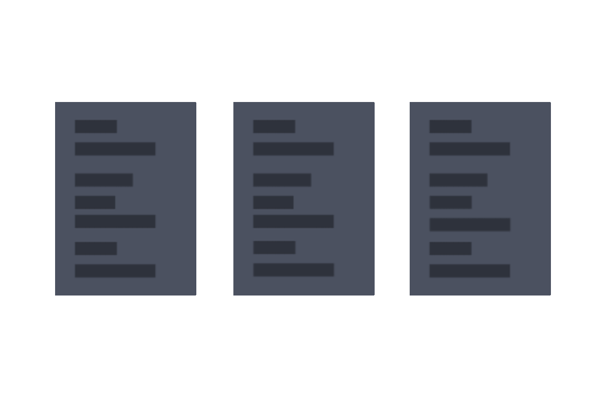

有著兩年以上的設計實務經驗，能獨立從需求探討、規劃流程，設計草稿到最後精稿規格的產出，並具備設計動態與高互動性的介面，以及規劃建置設計語言系統。
興趣是玩遊戲跟旅行，跟玩一些網頁特效。目前短期目標是找個歐洲小國家，坐在一間位於於河畔旁的咖啡店，看著人群走來走去。
在跳進設計之前，先了解產品與用戶需求，釐清整體脈絡與解決方案，確定設計需要解決的問題。在這階段會進行質性調研，競品分析等
將解決方案聚焦成具體的流程與畫面，規流程圖，概念草圖、低保真原型與團隊溝通確認需求是否落實到介面上，最後並開始設計精搞與高保真原型與視覺元素
將介面規格化，包括元件與視覺元素的參數，或響應式設計的規則，還有產品整體流程邏輯交接給程式人員，有需要也協助開發網頁切版，以及開發介面元件
產品上線後，追蹤設計的成效，並持續進行質性調研，調整產品方向或延伸現有功能，持續挖掘新的洞見與需求，慢慢優化現有設計